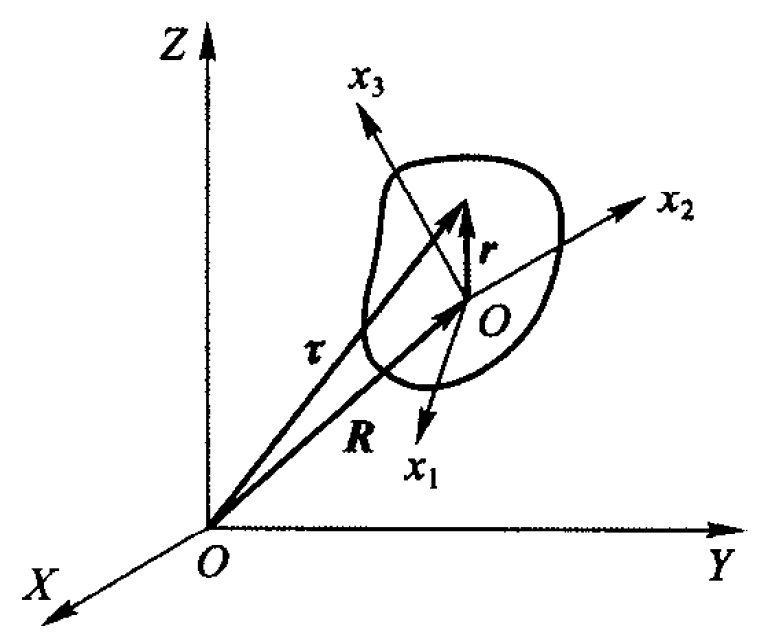
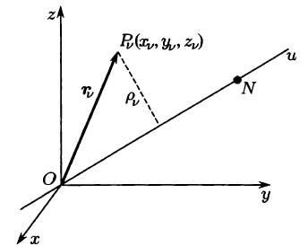
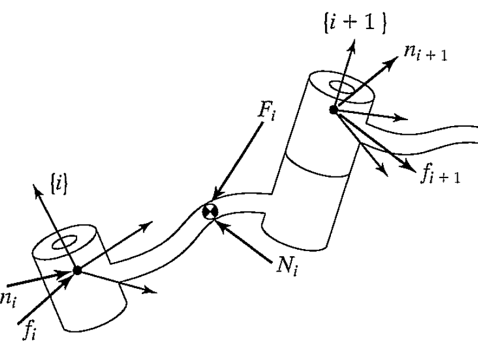

Dynamics¶
Acceleration of a rigid body¶
Linear Velocity
(i) Since from equation in general case
take derivative on both sides of the second "\(=\)" we have
apply first "\(=\)" of equation \(\ref{linear-vel}\) to the brackets, we have
For revolute joint, we have \(^BV_Q={^B\dot{V}_Q}=0\), so the above equation could be simplified as
Angular Velocity
Consider the case in which \(\{B\}\) is rotating relative to \(\{A\}\) with \(^AQ_B\) and \(\{C\}\) is rotating relative to \(\{B\}\) with \(^B\Omega_C\). Then the angular velocity of \(\{C\}\) in frame \(\{A\}\) is
take derivative on both sides we have
supplementary info: Fixed point motion of a rigid body¶
Reference
-
理论力学, 马尔契夫
-
理论物理学教程, 朗道
Here we give a deduction of motion of a rigid body in terms of physics.
To easily get the result, we view the rigid body as a set of discrete points. As for a continuous body, we change the mass \(m_i\) of a point \(i\) into \(dV\) with unit mass \(\rho dV\) and then integrate over it.
We have two basic frames, the fixed one and the moving one. The former one fr1: \(\{X,Y,Z\}\) is viewed as a global frame in our discussion and the latter one fr2: \(\{x_1,x_2,x_3\}\) is moving with the rigid, whose origin is usually set in the center of mass. The origin vector of fr2 is expressed in fr1 as \(\pmb{R}\) and the orientation of fr2 expressed in fr1 is expressed as a rotation matrix, which we would later discuss.

Then the motion can be decomposed into two parts, the first is the translation of center of mass, and the second is the rotation along the center of mass.
Assume any point \(P\) on the rigid body, we have its position \(\pmb{r}\) expressed in fr2 and \(\pmb{\tau}\) expressed in fr1. Assume is small time, it has a rotation \(d\pmb{\phi}\times \pmb{r}\), then
divide both sides with \(dt\) we have
introduce velocity
and we have
interpretation 1
Here \(\pmb{V}\) is the velocity of the origin of center of mass, \(\pmb{\Omega}\) is the rotation velocity of the rigid body.
fr2 do not coincide with center of mass
Assume center of mass if \(O\) and the origin of fr2 is \(O'\), with \(O'O=\pmb{a}\). Assume we have velocity of \(O'\) is \(\pmb{V}'\), its rotation velocity is \(\pmb{\Omega}'\).
Then the same point \(P\) has its position expressed in fr2 is \(\pmb{r}'\). So we have \(\pmb{r}=\pmb{r}'+\pmb{a}\). From equation \(\ref{vel}\) we have
However we the same definition we still should have
combining the above two we have
The above deduction is important, since equation \(\ref{vel-angular-relation}\) tells us the rotation velocity is independent of the frame 2. For all the frames, the rigid nody rotates around the axes which are parallel. Equation \(\ref{vel-translate-relation}\) tells us the following property.
Relationship of \(\pmb{V}\) and \(\pmb{\Omega}\)
If origin \(O\) is chosen, \(\pmb{V}\) and \(\pmb{\Omega}\) are perpendicular, then for all \(O'\), its \(\pmb{V}'\) and \(\pmb{\Omega}'\) are also perpendicular, since
Easy to check that, in this situation, we the velocity of all points are located on the same plane. Then by equation \(\ref{vel-translate-relation}\), we could always find another origin \(O'\) such that \(\pmb{V}'=0\), which means the rigid body is only making rotation motion.
Mass Distribution¶
We introduce inertia tensor, which can be thought of as a generalization of the scalar moment of inertia of an object.
The kinetics of the rigid body expressed in discrete points, is
to simplify we assume the summation is over \(i\).
Substitute equation \(\ref{vel}\) in and we have
the first is easy to be written as \(\frac{\mu\pmb{V}^2}{2}\), the translation of rigid boty. The second item could be derived by mixed product \(a\cdot(b\times c)=c\cdot(a\times b)\)
for all the point in the rigid body, \(\pmb{V}\) and \(\pmb{\Omega}\) are of the same, then by definition of center of mass
As for the third part, we have
which is called the rotational part of kinetics. To simplify the notation, we use \(x_i\), \(\Omega_k\) to be the coordinate of \(\pmb{r}\) and \(\pmb{\Omega}\), respectively. So
If we introduce tensor
then
Define a function called Lagrange function by subtracting \(T\) with potential energy \(U\)
We define the inertia od moment of the system with respect to an axis \(u\),
where \(\rho_v\) equals the distance of point \(P_v\) of the system. Then we focus on passing on difference axes which pass the same point.

Assume \(u\) pass the origin of the coordinate \(Oxyz\), with its cosine along \(Ox\), \(Oy\), \(Oz\) is denoted by \(\alpha\), \(\beta\), \(\gamma\), respectively. Then denote \(e_u=(\alpha, \beta, \gamma)\), we have
where \(J_x, J_y, J_z\) are the same definition as the following definition.
Properties of Inertia Tensor
(i) \(I_{ik}=I_{ki}\).
(ii) we have the following tensor matrix
where \(I_{xx}\), \(I_{yy}\) and \(I_{zz}\) are called the mass moments of inertia, or axis moment of inertia. And the other elements, whose integrals over mixed indices are called the mass products of inertia, or centrifugal moment of inertia.
(iii) for each element, we could integrate
(iv) Equation \(\ref{expand-expresstion}\) has a geometric meaning. That is, if we cut down a segment on axis \(u\), denoted by \(ON\), satisfies \(|ON|=1/\sqrt{J_u}\), then \(N(x,y,z)\) satisfies
substitute in the equation \(\ref{expand-expresstion}\), we have
which is an ellipsoid. If we choose an appropriate coordinate, we have its expression simplified as
that is, the mass product of moments equal zero. In this case, we call \(x_*\), \(y_*\), \(z_*\) the prinpiple axes, the corresponding coefficients \(A\), \(B\), \(C\) are called principle moments of inertia.
Actually, \(A,B,C\) are the eigenvalue of the matrix \(\pmb{J}\). If they are distinct, then the principle axis is uniquely determined.
Example. Some typical inertia tensor.
(i) For planar system, we have \(x_1,x_2\) in the plane, so \(x_3=0\) for all particles,
(ii) For linear system, we have \(x_3\) in the line, so \(x_1=x_2=0\), so
Moment of Momentum¶
Multiple cross product
Show that
Notice that \(e_i\times (e_j\times e_i)=e_j\), so
Still, we have the origin of moving frame coincides with the center of mass. Then by definition of moment of momentum
here we have to sum over \(k\).
If \(\pmb{r}=(x_1,x_2,x_3)^T\), \(\pmb{\Omega}=(\Omega_1, \Omega_2, \Omega_3)^T\), then
or in language of matrix
If \(Ox\), \(Oy\), \(Oz\) are the principle axes, then \(\pmb{J}\) is diagonal, so \(M_1=J_x\Omega_1\), \(M_2=J_y\Omega_2\), \(M_3=J_z\Omega_3\). Generally speaking, the moment of momentum \(\pmb{M}\) is not parallel to angular velocity \(\pmb{\Omega}\), unless \(\pmb{J}\) is disgomal, or the coordinate is the principle axes, meaning the three directions are decoupled.
Dynamic Equations¶
If we know the center of mass and the inertia of the link, then its mass distribution is completely characterized. To accelerate or decelerate it, we have to apply forces and torque.
To get the equations, we take derivative of \(\pmb{p}\) and \(\pmb{M}\) with respect to \(t\).
Translation ODE¶
Translation ODE
(i) For each particle, we have \(\dot{\pmb{p}}_i=\pmb{f}_i\), then sum over \(i\), and we have
the force is from the outside of system.
(ii) And the force \(\pmb{F}\) could be expressed by the potential energy of the rigid body in the outer field
(iii) so we have equation \(\ref{eq1}\) using Lagrange function
Since \(\pmb{P}=\sum m\pmb{p}=\mu \pmb{V}\), we have
\(\square\)
When the rigid body translates \(\delta\pmb{R}\), then the position vector \(\tau\) of each particle changes, the change of the corresponding potential
\(\square\)
By equation \(\ref{Lagrange-func}\), we have
and using (ii) we have the result.
Rotation ODE¶
Rotation ODE
Assume the center of mass does not move. Then
(i)
where \(\pmb{K}\) is called the torque.
(ii) Using Lagrange function
(iii) when the origin of the frame translates, we have \(\pmb{r}=\pmb{r}'+\pmb{a}\), so
Taking derivative of moment of momentum \(\pmb{M}\)
Because \(\pmb{V}=0\), we have \(\dot{\pmb{r}}=\pmb{v}=\dot{\pmb{\tau}}\). Since \(\pmb{v}\) and \(\pmb{p}\) share the same direction, we have \(\dot{\pmb{r}}\times \pmb{p}=0.\) Replacing \(\dot{\pmb{p}}\) by \(\pmb{f}\), we have
\(\square\)
Take derivative of Lagrange function, or with respect to the coordinate of \(\pmb{\Omega}\)
the same as equation \(\ref{moment-tensor}\).
Then when the rigid body rotates about a small angle \(\delta \varphi\), the change of potential
and we are done.
\(\square\)
When \(\pmb{F}\) and \(\pmb{K}\) are perpendicular, then we could find a vector \(\pmb{a}\) such that
The \(\pmb{a}+\pmb{F}\) is also an acceptable solution.
Example. Uniform force field. The force acting on particle is \(\pmb{f}=e\pmb{E}\), then
assume \(\sum e\neq 0\), then let the center of 'mass' to be
so
The above deduction is based on a fixed frame (either not translation or rotation).
Newton-Euler's Equation¶
Newton-Euler's Equation
For a fixed point motion of a rigid body, we have translation part ODE and rotation part ODE
Any vector \(\pmb{A}\) has a changing velocity with respect to a frame which is moving.
Assume \(d\pmb{A}/dt\) is the changing velocity of \(\pmb{A}\) with respect to a fixed frame. If \(\pmb{A}\) do not change in a rotating frame, then
If \(\pmb{A}\) moves in the rotating frame, then we add \(d'\pmb{A}/{dt}\) (we just use the results from fixed frame here)
So apply this regulation to \(\pmb{P}\) and \(\pmb{M}\), we have
Project to the coordinate of the moving frame, we have \(\left(\frac{d'\pmb{P}}{dt}\right)=\frac{dP_1}{dt},\cdots, \left(\frac{d'\pmb{M}}{dt}\right)=(\pmb{J}\frac{d\pmb{\Omega}}{dt})_1\), so the translation part ODE is
and the rotation part ODE is (a little complicated, only present the first line)
if the coordinate \(Ox,Oy,Oz\) of moving system are principle axes, then \(M_i=I_i\Omega_i (i=1,2,3)\), and \(I_{ik}=0 (i\neq k)\), so
Iterative Dynamic Formulation¶
Starting with link \(1\) and moving successively, link by link, outward to link \(n\).
Deduction: Outward
(i) Rotational velocity.
from equation \(\ref{angular-vel}\), we have
For prismatic, we have \(\dot{\theta}_{i+1}=\ddot{\theta}_{i+1}=0\), so we only have the first item.
(ii) Linear velocity.
from equation \(\ref{linear-vel-general}\), we have
For prismatic, we have the second item with its corresonding change
For revolute, \(^iV_{i+1}={^i\dot{V}_{i+1}}=0\), so we only have the first item.
(iii) Acceleration of center of mass of link
Still from equation \(\ref{linear-vel-general}\), we have the second and third item equal zero
(iv) force and torque
From Newton-Euler's Equation, we have
Deduction: Inward
With forces and torques acting on links, we have to calculate joint torques that would result in these net forces and torques on the links. Here we denote \(f_i\) as force exerted on link \(i\) by link \(i-1\), \(n_i\) as torque exerted on link \(i\) by link \(i-1\).

Apparently net force on link \(i\) is
and for torque we substitute the above force relationship in
For revolute, \(\tau_i={^in_i^T}{^i\hat{Z}_i}\), and for prismatic, \(\tau_i={^if_i^T}{^i\hat{Z}_i}\).
Structure of a manipulator's dynamic equations¶
State-space equation
The above Newton-Euler equations apply for any manipulators, and this yields a dynamic equation which could be written in the following form
or for every row with \(\Theta=(\theta_1,\cdots,\theta_n)^T\),
where
are called the first Christoffel sign, \(j\) and \(k\) are of equal state.
equation \(\ref{state-space}\) are called state-space equation, \(M(\Theta)_{N\times N}\) is called mass matrix of the manipulator, \(V(\Theta,\dot{\Theta})_{N\times 1}\) is called vector of centrifugal and Coriolis terms, which is where the main idea of the formula come from.
Configuration-space equation
Rewrite the velocity-dependent term \(V(\Theta, \dot{\Theta})\), we have
where \(B(\Theta)_{n\times n(n-1)/2}\) is a matrix of Coriolis coefficients, \([\dot{\Theta}\dot{\Theta}]_{n(n-1)/2\times 1}\) is a vector of joint velocity products given by
\(C(\Theta)_{n\times n}\) is an matrix of centrifugal coefficients, and \(\dot{\Theta}^2_{n\times 1}\) is a vector given by
Equation \(\ref{configuration-space}\) is called configuration-space equation because of \(B\) and \(C\).
Dynamics in Cartesian Space¶
From equation \(\ref{state-space}\), which is in joint space, we could get the corresponding result in terms of the acceleration of end-effector expressed in Cartesian space.
Dynamics
From Force-torque relationship, we know
and
So equation \(\ref{state-space}\) becomes
where